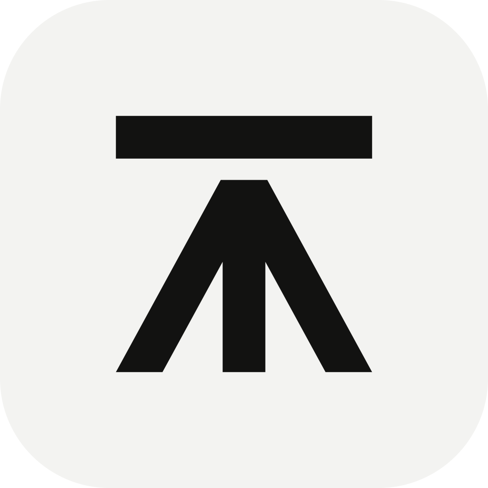

Nothing invented. Everything measured.
The brand standard for SpaceBench, a benchmark family that tests language models on closed-loop control of spacecraft in simulators.
| Document | SB-BS |
|---|---|
| Revision | A |
| Applies to | Dock, Landing |
| Grounds | Paper, Ink |
Six rules
The references behind this identity borrow the look of engineering documents. SpaceBench has the real quantities, so the identity uses them instead of imitating them.
Derived, not decorated.
Every graphic is drawn from a simulator quantity: a pulse, a range, a tolerance, a seed. If a shape has no source, remove it.
One accent, one meaning.
The parent brand is black and white. Each simulation owns one colour. On a page the accent marks the single thing the reader must find.
Paper and ink are equals.
Documents, tables and the paper live on off-white. Flight and replays live on near-black. Every asset ships for both grounds.
A unit on every number.
0.08 m/s, 4.0 deg, 27 of 30 seeds. A number without a unit, a sample size or a source does not go on the page.
Status is a shape, never a hue.
Pass is a solid dot. Fail is a ring. The page must still read on a black-and-white printer and for colour-blind readers.
Specimen until flown.
Sample data carries the SPECIMEN stamp. Only runs we perform appear as results, and placeholder model names never look real.
Logo
The mark is the surveyor's bench mark: a datum line with a broad arrow pointing at it. Surveyors cut it into stone to fix a known height that every later measurement refers to. Here the line is the docking plane, the arrow is the approach, and the gap is the last distance before contact.
| Canvas | 8 × 8 modules | 120 × 120 |
|---|---|---|
| Stroke | Datum, stem and legs | 1 module |
| Clearance | Built into the canvas | 1 module |
| Contact gap | Datum to arrow tip | ½ module |
| Legs | Outer edges aim at the datum centre | 6 modules wide |
| Corners | No rounding | 0 |
The gap never closes. A closed gap is a collision, and the benchmark scores first contact, not impact.
Orientation system
The mark turns to each simulation's approach axisSpaceBench. The arrow rises to the datum. Black and white only.
Ion violet. The capsule closes sideways on the port plane.
Burn orange. The booster descends to the pad.
The next simulation takes a free axis and one colour from the reserve list. Diagonal axes come after the four cardinal ones.
Lockups
Second tone names the thing: gray for Bench, accent for a simulationSize, space and icons
The mark holds down to a 16 px canvas. The lockup holds down to 16 px tall. Below that, use the mark alone.

A full accent field is allowed here and on simulation posters only. The canvas already holds one module of clearance, so never crop it; keep a second module free around a lockup in layouts.
Misuse
Six ways to break itColour
A warm-neutral ladder from card white to void carries the whole brand. Colour enters only with a simulation, one accent each, and it is never mixed with another accent on the same page.
Accent registry
One per simulationKeep the accent under a tenth of the page. If two things are accented, neither is. Burn orange is too light for text on paper, so text uses accent-text, a darker step picked per ground.
Listed so a later simulation picks a hue that stays apart from violet and orange. One functional colour exists outside the brand: alert, used only in the flight view for a keep-out or collision violation.
Roles
Use roles in code, never raw stepsText needs 4.5. Display type and graphics need 3.0. The third tone is for display sizes only.
Typography
Three voices. Geist speaks, Geist Mono labels, and SB Matrix, a dot-matrix face drawn for this brand, reads out measured values and nothing else.
Headlines at 600 with tracking from −0.03 to −0.055 em. Body at 400. Open licence (SIL OFL 1.1).
Capitals, 0.07 em tracking, 11 px. Labels, identifiers, table figures and code. Never for sentences.
Capitals, figures and 37 symbols on a 5 × 7 dot cell. Only for values that came out of the simulator or the scorer.
Scale
Token · size / leading / trackingSetting rules
Statement in ink, qualifier in the third tone. Display sizes only.
The last phrase may take the accent when it is the one thing to find.
Gray lead, ink continuation, in one line.
Every sheet opens with a header row of three or four facts: what, which, where in the set, and its reference.
Brackets caption a figure. A block cursor opens a section. A pill is a filter or a state. The dashed stamp marks sample data.
A space between number and unit. Degrees take the sign in prose and "deg" in tables. Counts read "k of n". Times read T+mm:ss.
Voice
A flight controller, not a marketer. Short declarative sentences. Say what was measured, how many times, and against what limit. Then stop.
| Write | Not | Why |
|---|---|---|
| 22 of 30 seeds docked (73%, 95% interval 56 to 86). | Crushes six-axis docking. | A rate without its sample and interval is not a result. |
| Contact at 0.08 m/s, inside the 0.05 to 0.10 m/s limit. | A perfect docking. | Name the quantity and the limit it was judged against. |
| A Dragon-class vehicle built from public parameters. | An exact Crew Dragon simulation. | "Exact" is reserved for the day real vehicle data arrives. |
| The pass rule is the docking standard's reference contact conditions. | Dragon's flight limits. | They are IDSS Rev F design conditions, not verified flight limits. |
| A benchmark for six-axis spacecraft piloting by language models. | The first LLM docking benchmark. | Earlier work exists. We cite it. |
| Cost per episode, per model. | Cheapest provider. | The leaderboard does not rank providers by price. |
Words and formats
These are the nouns of the action model and the scenario. Use them the same way every time.
If the sentence still works after the word is deleted, delete it.
| Flight | SBD-T3-0421 |
|---|---|
| Tier | T1 … T6 |
| Elapsed | T+04:12 |
| Date | 2026-11-15 |
| Document | SB-BS-05 REV. A |
SB, then the simulation letter (D for Dock, L for Landing), the tier, and the four-digit seed.
Graphic devices
Ten drawings, each generated from scenario constants or an action log by js/sb-graphics.js. The same seed gives the same picture on every machine. Until real replays exist they run on a labelled specimen flight.
Use it wherever a run is named: replay cards, share images, the footer of a flight sheet. It replaces stock imagery.
Arcs start at the hold points and the 200 m keep-out sphere, on a log range scale, and land on the port. For a failed run, arcs beyond the point reached turn gray.
One flight in side view. The path is the only accented line. It ends on the datum bar, the same bar as in the logo.
A log ruler. Holds are the long ticks. Use it as a progress bar, a slider and a stepper.
Target on the solid ellipse, chaser on the dotted one. Reserved for content about orbital dynamics.
The interface along the approach axis. For the capture and latching stage that follows first contact.
The accent band is the tolerance (here ±4.0 deg). The pointer is the measured error.
Sixteen thrusters along the approach axis. A stuck thruster is the accent dot with a plume. A failed one is a ring.
| A run | Flight signature, approach chart |
|---|---|
| The task | Approach arcs, range scale |
| A tolerance | Error dial |
| Hardware | Docking interface, thruster set |
| Orbital dynamics | Orbit |
| Atmosphere, covers | Limb, on ink only |
The limb is the only atmospheric image in the kit. It replaces photographs of Earth, so the brand never depends on a licensed picture. Ink ground only.
Pictograms
Drawn on a 24 unit grid with a 1.5 unit stroke and round caps. Six of them are the six axes, because the benchmark is about how those axes interact.
Tiers
Six dots, n lit. Tier is never a colourStatus
Shape carries the stateComponents
Plain HTML and CSS in css/brand.css, driven by the tokens. They follow the Ground and Simulation switches in the side rail.
One accent button per view. The command button, square with corner ticks, is for actions that reach the simulator.
Tracks are tabs because they are never pooled. Six dots page through the six tiers.
Offsets, attitude errors and rates, the same instruments a human sees. A value outside its limit gets an accent edge, not a red fill.
Reference contact conditions, IDSS IDD Rev. F, table 3.3.1.1-2. Design conditions adopted as the pass rule, not verified flight limits.
The tag that travels with a replay or a shared image. Accent block with the mark, then the facts.
A hairline with four registration dots. Use it around figures and on stationery, one frame per sheet.
Layout
Sheets, not pages. Each sheet has a header row, an index numeral, one statement and one figure. Twelve columns, hairlines, and generous empty paper.
Data display
The leaderboard is the product, so it gets the strictest rules. The numbers below are a specimen made by the layout code. No model has flown yet.
Sort by success rate. Each reasoning level is its own row. The row under discussion takes the soft accent; nothing else on the table is coloured.
A rate always shows its interval. The bar is the rate, the whisker with two ring terminals is the 95% Wilson interval for k of n seeds.
Never pool tracks or boards. Telemetry, vision and autopilot are separate tables. Live human flights and matched human flights are separate boards, and only the matched board sits next to models. Cost is per episode, never a provider ranking.
Motion
Things move the way the vehicle does: a short impulse, then a coast. No bounce, no spring, no overshoot. An overshoot at a docking port is a failure.
State changes, toggles, readout updates. Values step, they do not tween.
Panels, menus and cards entering or leaving.
Camera moves, page transitions, replay scrubbing. Fast start, long settle.
With reduced motion requested, everything becomes a pulse.
Applications
Templates in templates/, rendered to exports/. Each is an HTML file that reads the tokens, so a change to the standard reaches all of them on the next build.
Files
Everything is generated from three scripts in build/. Change a number there, run the build, and the logos, tokens, fonts and exports follow.
Set data-theme to light or dark and data-sim to parent, dock or landing on any element. Everything inside follows. One level of nesting is supported: a dark panel in a light page, or the reverse.